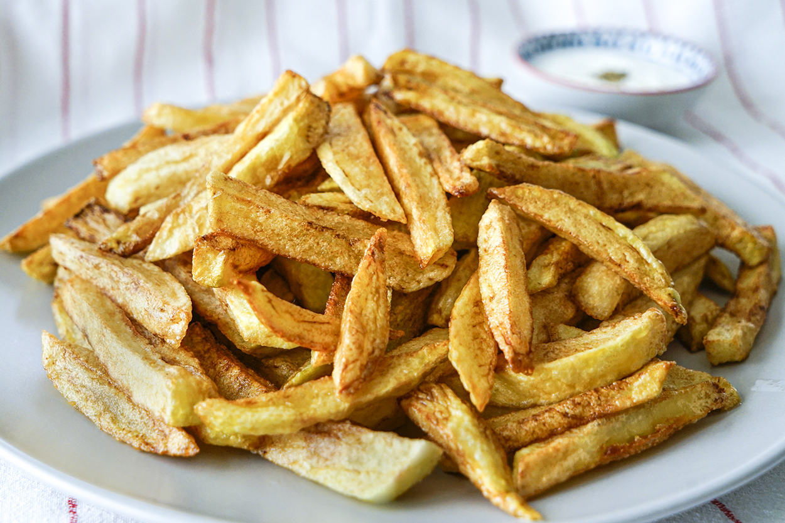

Home
Patates Kızartması

Açıklama
Patates kızartması, Türk mutfağının en sevilen atıştırmalıklarından
biridir.
Genellikle ana yemeklerin yanında servis edilir ve herkes tarafından
sevilir.
Malzemeler
- 4 adet patates
- Yeterince sıvı yağ
- Tuz
Adımlar
- Patatesleri soyun ve dilimleyin.
- Bir tavada sıvı yağı ısıtın.
- Patates dilimlerini kızgın yağa ekleyin.
- Altın rengi alana kadar kızartın.
- Tuz ekleyin ve sıcak servis yapın.